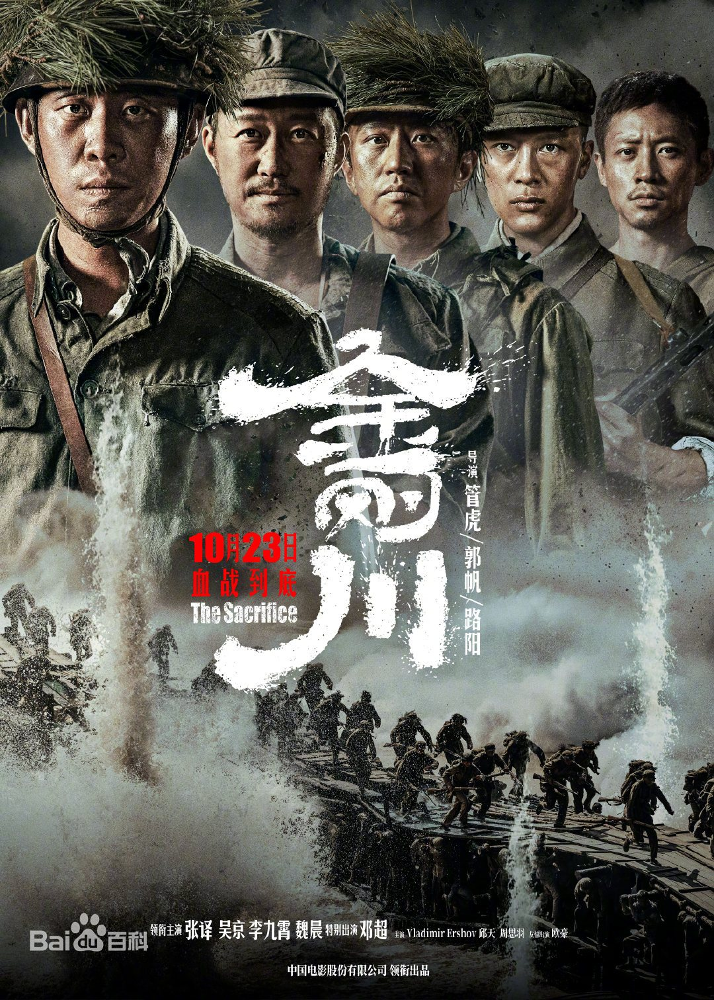
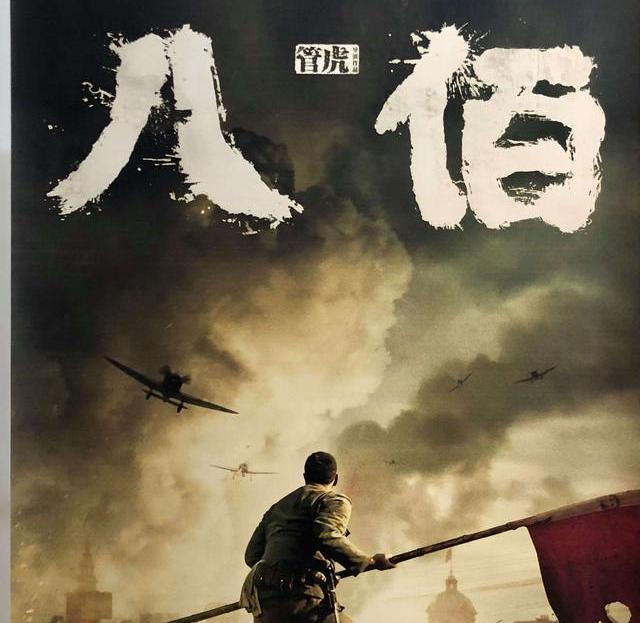

- 
金刚川
该片纪念中国人民志愿军抗美援朝七十周年，讲述志愿军战士们在敌我力量悬殊的情况下，以血肉之躯顽强拼搏的英勇事迹。该片于2020年10月23日在中国内地正式上映 。
- 
八佰
八佰由管虎执导的战争题材影片。该片取材于1937年淞沪会战，讲述了被称作“八百壮士”的中国国民革命军第三战区88师524团的一个加强营，固守苏州河畔的四行仓库、阻击日军的故事 ...
-
长津湖
《长津湖》电影的历史背景基于抗美援朝战争第二次战役中的长津湖战役。这场战役发生在1950年11月27日至12月24日，是中国人民志愿军与美军在朝鲜长津湖地区的一次重要交战。中国人民志愿军第9兵团在严寒条件下，与装备精良的美军第10军展开了激烈的战斗，最终迫使美军经历了历史上最长的退却。
-
浴血无名川
该片是国家广播电视总局“网络视听节目精品创作传播工程”扶持项目，北京市广播电视局“中国榜样”系列网络电影，以抗美援朝为故事背景，讲述了中国人民志愿军英勇作战，取得抗美援朝战争伟大胜利的故事